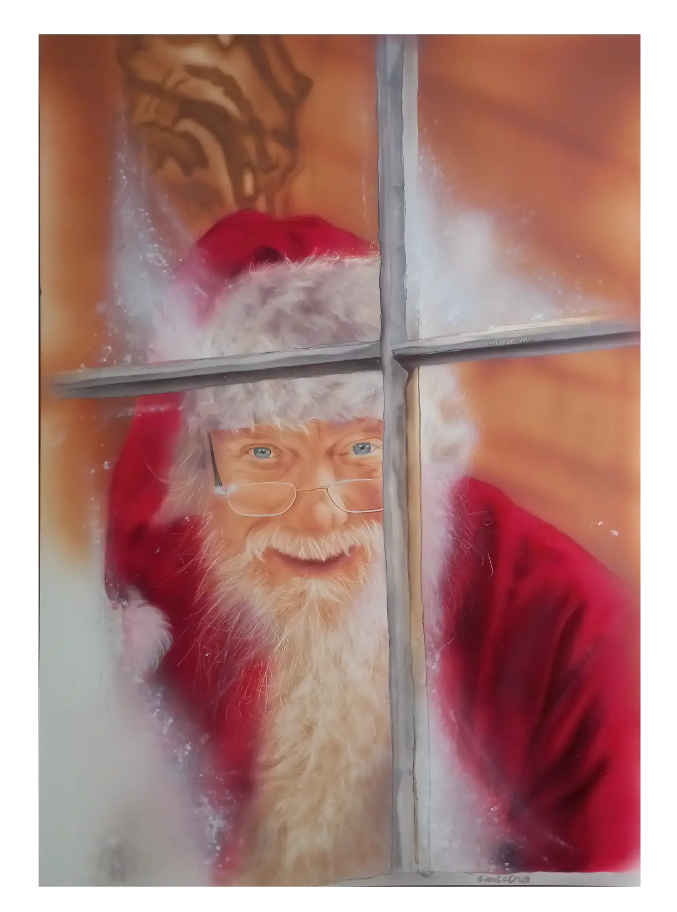
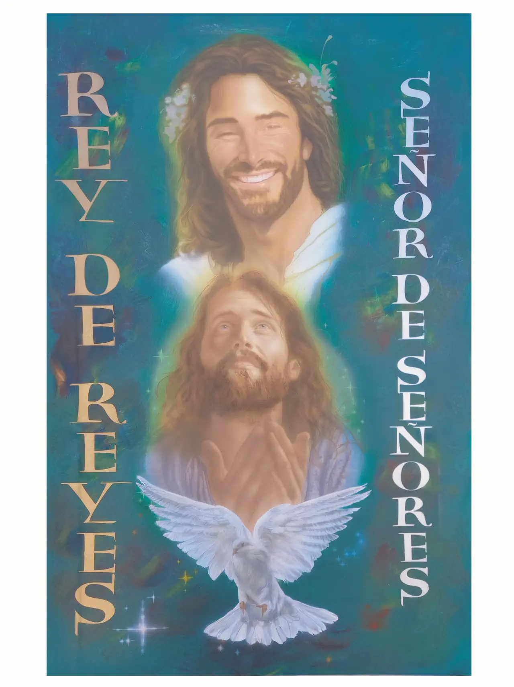
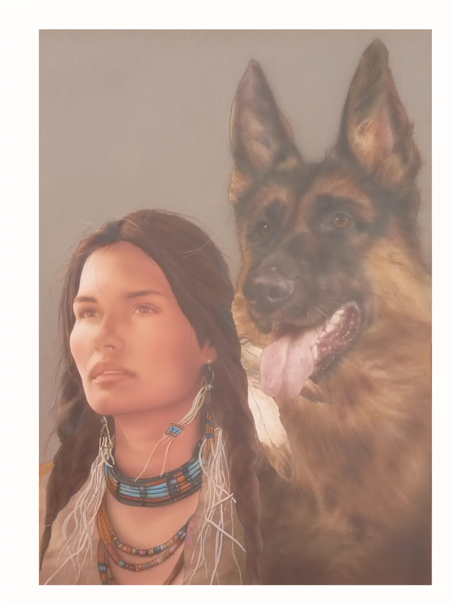

Bienvenido a Aerografia79
Arte con alma, técnica con corazón
«Creo obra libre: piezas únicas que nacen de mi visión, no de un encargo.».
Mi trabajo nace de una necesidad profunda de crear sin instrucciones, sin encargos y sin condicionantes.
Me muevo en un territorio donde la técnica y la emoción se encuentran para construir una narrativa visual
propia. Cada pieza es el resultado de un diálogo íntimo entre la idea y el material, sin la presión de
reproducir deseos ajenos.
Mi camino está enfocado en la obra libre, en generar piezas únicas que formen parte de series personales,
pensadas para exposiciones, galerías y espacios donde el arte pueda respirar con su propio lenguaje.
No busco fabricar a medida: busco expresar, investigar y evolucionar.
Elijo cada obra como quien abre una puerta nueva. Lo que pinto no es un servicio: es una propuesta
artística.
Si algo define mi trabajo es la autenticidad, la profundidad emocional y el compromiso con una identidad
visual propia.
Mi objetivo no es satisfacer un pedido, sino construir un territorio artístico que crezca conmigo y con
quienes lo contemplan.
¿Por qué encargar un retrato personalizado?
1. Confianza en el producto: Un retrato es una obra única, hecha a mano, que capta
emociones, memorias y personalidad. Verás calidad, técnica y alma en cada trazo.
2. Confianza en el artista: Puedes ver ejemplos reales de mi trabajo. Clientes satisfechos
han confiado en mí para representar a sus seres queridos y han quedado encantados con el resultado.
3. Confianza en tu decisión: No es solo una compra, es una inversión emocional. Un retrato
personalizado es un regalo con valor eterno.
Frases que inspiran:
- "Un retrato es un regalo único que dura toda la vida."
- "Es una forma de honrar a alguien especial."
- "No es un gasto, es una inversión en recuerdos y emociones."
Leer el
artículo completo: Las 3 certezas antes de comprar
A la venta
Obras disponibles para comprar o por encargo.

590€ - Cielo y Tierra
90 x 60cm
Aerografo sobre plancha de cartón yeso
2024

560€ - Santa Claus
70 x 50cm
Aerografo sobre plancha de cartón yeso
2024

120€ - Rey de Reyes, Señor de Señores
outlet
El pladur tiene un pequeño desperfecto en un lateral (mordisco)
Enseño fotografía y vídeo sin compromiso
90 x 60cm
Aerografo sobre plancha de cartón yeso
2024

560€ - Preciosa rosa, Reina de los Cielos
90 x 60cm
Aerografo sobre plancha de cartón yeso
2024

Jesús de Nazareth
A la venta en "casa Alba" - Guadalajara
70 x 50cm
Aerografo sobre plancha de cartón yeso
2024

Montserrat
A la venta en galeria "Artistas Diversos"
65 x 50cm
Aerografo sobre plancha de cartón yeso
2024

280€ - México
70 x 50cm
Aerografo sobre plancha de cartón yeso
2024

270€ - Primavera
67 x 50cm
Aerografo y lápices de color sobre lámina de papel Schoeller
2024
Encargos personalizados
¿Tienes una idea en mente? ¿Un retrato, una moto, unas llantas, un casco con historia?
Démosle forma.
Todo encargo comienza con una conversación.
“Cada pieza que se pinta es única. Lleva tu esencia, tu historia, tu energía.”
Escríbeme sin compromiso. Juntos definiremos el diseño, los detalles y tiempos de entrega.
También acepto ideas para regalos especiales: cumpleaños, aniversarios o fechas señaladas.